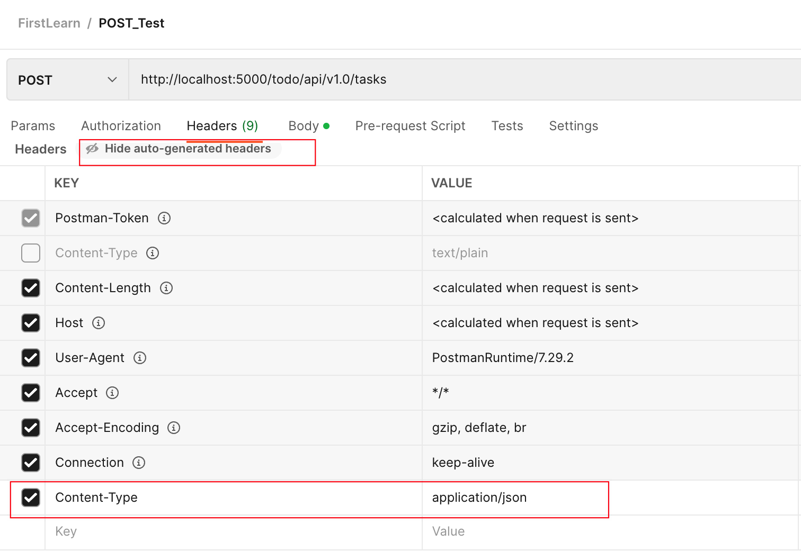
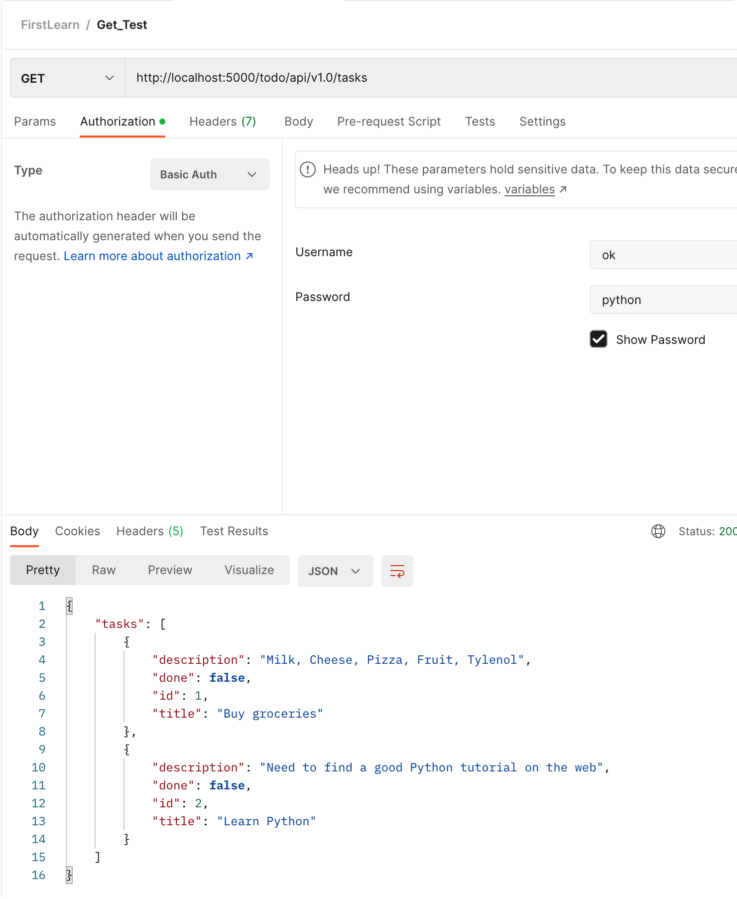

1. 基础知识整理
REST 基本成为 web services 和 APIs 的标准架构，已经是大多数 APP 的架构。
REST 的六个特性：
Client-Server ：服务器端与客户端分离。
Stateless（无状态） ：每次客户端请求必需包含完整的信息，换句话说，每一次请求都是独立的。
Cacheable（可缓存） ：服务器端必须指定哪些请求是可以缓存的
Layered System（分层结构） ：服务器端与客户端通讯必需标准化，服务器的变更并不会影响客户端。
Uniform Interface（统一接口） ：客户端与服务器端的通讯方法必需是统一的。
Code on demand（~~按需执行代码？ ~~ ） ：服务器端可以在上下文中执行代码或者脚本？
具体解释可以看 Code on demand - Wikipedia
In distributed computing , code on demand is any technology that sends executable software code from a server computer to a client computer upon request from the client’s software. Some well-known examples of the code on demand paradigm on the web are Java applets , Adobe’s ActionScript language for the Flash Player , and JavaScript . [1] ^^
另外可以还需要补充一个特性是部分操作的 幂等性 ，即执行若干次和执行一次的效果一样 。
哪些是幂等或/且安全的方法？ - RESTful 手册 (sofish.github.io)
答面试官问：怎么实现接口幂等性 | Laravel China 社区 (learnku.com)
RESTful web services的核心概念是管理资源，资源是由URIs来表示，客户端使用HTTP当中的’POST, OPTIONS, GET,PUT,DELETE’等方法发送请求到服务器，改变相应的资源状态。
2. 代码示例学习
按照博客中说明建立好虚拟环境后就可以开始了，注意博客中使用的应该是 Python2 版本所以有些是不能执行的，下面的实现已经都改成了 Python3 版本了。
另外博客中使用 curl 来模拟发起 http 请求，而我在公司使用会莫名被禁用请求，哪怕本地也不行，于是只好使用 postman 客户端来模拟，效果也不错。
实现1：Hello World
服务端
1 2 3 4 5 6 7 8 9 10 11 from flask import Flaskapp = Flask(__name__) @app.route('/' def index (): return "Hello, World!" if __name__ == '__main__' : app.run(debug=True )
实现2：实现 GET
服务端
1 2 3 4 5 6 7 8 9 10 11 12 13 14 15 16 17 18 19 20 21 22 23 24 25 26 from flask import Flask, jsonifyapp = Flask(__name__) tasks = [ { 'id' : 1 , 'title' : u'Buy groceries' , 'description' : u'Milk, Cheese, Pizza, Fruit, Tylenol' , 'done' : False }, { 'id' : 2 , 'title' : u'Learn Python' , 'description' : u'Need to find a good Python tutorial on the web' , 'done' : False } ] @app.route('/todo/api/v1.0/tasks' , methods=['GET' ] def get_tasks (): return jsonify({'tasks' : tasks}) if __name__ == '__main__' : app.run(debug=True )
实现 3：特定参数 GET
注意第 23 行参考博客中使用的是 Python2 实现，因此在这里 filter 的返回值是不同的，需要都修改成 list 才能使用。具体见下面参考链接
1 2 3 4 5 6 7 8 9 10 11 12 13 14 15 16 17 18 19 20 21 22 23 24 25 26 27 28 29 30 from flask import Flask, jsonify, abortapp = Flask(__name__) tasks = [ { 'id' : 1 , 'title' : u'Buy groceries' , 'description' : u'Milk, Cheese, Pizza, Fruit, Tylenol' , 'done' : False }, { 'id' : 2 , 'title' : u'Learn Python' , 'description' : u'Need to find a good Python tutorial on the web' , 'done' : False } ] @app.route('/todo/api/v1.0/tasks/<int:task_id>' , methods=['GET' ] def get_task (task_id ): task = list (filter (lambda t: t['id' ] == task_id, tasks)) print (task) if len (task) == 0 : abort(404 ) return jsonify({'task' : task[0 ]}) if __name__ == '__main__' : app.run(debug=True )
Reference:
python - TypeError: 'filter' object is not subscriptable - Stack Overflow
实现 4：完善 Exception 处理
1 2 3 4 5 6 7 8 9 10 11 12 13 14 15 16 17 18 19 20 21 22 23 24 25 26 27 28 29 30 31 32 33 from flask import Flask, jsonify, abort, make_responseapp = Flask(__name__) tasks = [ { 'id' : 1 , 'title' : u'Buy groceries' , 'description' : u'Milk, Cheese, Pizza, Fruit, Tylenol' , 'done' : False }, { 'id' : 2 , 'title' : u'Learn Python' , 'description' : u'Need to find a good Python tutorial on the web' , 'done' : False } ] @app.errorhandler(404 def not_found (error ): return make_response(jsonify({'error' : 'Not found' }), 404 ) @app.route('/todo/api/v1.0/tasks/<int:task_id>' , methods=['GET' ] def get_task (task_id ): task = list (filter (lambda t: t['id' ] == task_id, tasks)) if len (task) == 0 : return not_found(Exception) return jsonify({'task' : task[0 ]}) if __name__ == '__main__' : app.run(debug=True )
Reference
Python 异常处理 | 菜鸟教程 (runoob.com)
实现 5：设计 Post
这里 Postman 部分设置如下，手动在 Header 里面添加 Content-Type 作为 header，然后在 Body 中选择 raw 然后输入 json 格式的 content，最后发送即可。

服务端代码如下
1 2 3 4 5 6 7 8 9 10 11 12 13 14 15 16 17 18 19 20 21 22 23 24 25 26 27 28 29 30 31 32 33 34 35 36 37 38 39 from flask import Flask, jsonify, abort, make_response, requestapp = Flask(__name__) tasks = [ { 'id' : 1 , 'title' : u'Buy groceries' , 'description' : u'Milk, Cheese, Pizza, Fruit, Tylenol' , 'done' : False }, { 'id' : 2 , 'title' : u'Learn Python' , 'description' : u'Need to find a good Python tutorial on the web' , 'done' : False } ] @app.route('/todo/api/v1.0/tasks' , methods=['GET' ] def get_tasks (): return jsonify({'tasks' : tasks}) @app.route('/todo/api/v1.0/tasks' , methods=['POST' ] def create_task (): if not request.json or not 'title' in request.json: abort(400 ) task = { 'id' : tasks[-1 ]['id' ] + 1 , 'title' : request.json['title' ], 'description' : request.json.get('description' , "" ), 'done' : False } tasks.append(task) return jsonify({'task' : task}), 201 if __name__ == '__main__' : app.run(debug=True )
然后再发送 GET 请求可以获取到已经添加后的 Task 的列表
Reference
(110条消息) Postman发送post请求_maowendi的博客-CSDN博客_postman中post请求
实现 6：实现 PUT 和 DELETE
1 2 3 4 5 6 7 8 9 10 11 12 13 14 15 16 17 18 19 20 21 22 23 24 25 26 27 28 29 30 31 32 33 34 35 36 37 38 39 40 41 42 43 44 45 46 47 48 49 50 51 52 53 54 55 56 57 58 59 60 61 62 63 64 65 66 from flask import Flask, jsonify, abort, make_response, requestapp = Flask(__name__) tasks = [ { 'id' : 1 , 'title' : u'Buy groceries' , 'description' : u'Milk, Cheese, Pizza, Fruit, Tylenol' , 'done' : False }, { 'id' : 2 , 'title' : u'Learn Python' , 'description' : u'Need to find a good Python tutorial on the web' , 'done' : False } ] @app.route('/todo/api/v1.0/tasks' , methods=['GET' ] def get_tasks (): return jsonify({'tasks' : tasks}) @app.route('/todo/api/v1.0/tasks' , methods=['POST' ] def create_task (): if not request.json or not 'title' in request.json: abort(400 ) task = { 'id' : tasks[-1 ]['id' ] + 1 , 'title' : request.json['title' ], 'description' : request.json.get('description' , "" ), 'done' : False } tasks.append(task) return jsonify({'task' : task}), 201 @app.route('/todo/api/v1.0/tasks/<int:task_id>' , methods=['PUT' ] def update_task (task_id ): task = list (filter (lambda t: t['id' ] == task_id, tasks)) if len (task) == 0 : abort(404 ) if not request.json: abort(400 ) if 'title' in request.json and type (request.json['title' ]) != unicode: abort(400 ) if 'description' in request.json and type (request.json['descriptioin' ]) is not unicode: abort(400 ) if 'done' in request.json and type (request.json['done' ]) is not bool : abort(400 ) task[0 ]['title' ] = request.json.get('title' , task[0 ]['title' ]) task[0 ]['description' ] = request.json.get('description' , task[0 ]['description' ]) task[0 ]['done' ] = request.json.get('done' , task[0 ]['done' ]) return jsonify({'task' : task[0 ]}) @app.route('/todo/api/v1.0/tasks/<int:task_id>' , methods=['DELETE' ] def delete_task (task_id ): task = list (filter (lambda t: t['id' ] == task_id, tasks)) if len (task) == 0 : abort(404 ) tasks.remove(task[0 ]) return jsonify({'result' : True }) if __name__ == '__main__' : app.run(debug=True )
实现 7：改进 Web Service 接口
1 2 3 4 5 6 7 8 9 10 11 12 13 14 15 16 17 18 19 20 21 22 23 24 25 26 27 28 29 30 31 32 33 34 35 36 37 38 39 40 41 42 43 44 45 46 47 48 49 50 51 52 53 54 55 56 57 58 59 60 61 62 63 64 65 66 67 68 69 70 71 72 73 74 75 from flask import Flask, jsonify, abort, make_response, request, url_forapp = Flask(__name__) tasks = [ { 'id' : 1 , 'title' : u'Buy groceries' , 'description' : u'Milk, Cheese, Pizza, Fruit, Tylenol' , 'done' : False }, { 'id' : 2 , 'title' : u'Learn Python' , 'description' : u'Need to find a good Python tutorial on the web' , 'done' : False } ] def make_public_task (task ): new_task = {} for field in task: if field == 'id' : new_task['url' ] = url_for('get_task' , task_id=task['id' ], _external=True ) else : new_task[field] = task[field] return new_task @app.route('/todo/api/v1.0/tasks' , methods=['GET' ] def get_task (): return jsonify({'tasks' : list (map (make_public_task, tasks))}) @app.route('/todo/api/v1.0/tasks' , methods=['POST' ] def create_task (): if not request.json or not 'title' in request.json: abort(400 ) task = { 'id' : tasks[-1 ]['id' ] + 1 , 'title' : request.json['title' ], 'description' : request.json.get('description' , "" ), 'done' : False } tasks.append(task) return jsonify({'task' : task}), 201 @app.route('/todo/api/v1.0/tasks/<int:task_id>' , methods=['PUT' ] def update_task (task_id ): task = list (filter (lambda t: t['id' ] == task_id, tasks)) if len (task) == 0 : abort(404 ) if not request.json: abort(400 ) if 'title' in request.json and type (request.json['title' ]) != unicode: abort(400 ) if 'description' in request.json and type (request.json['descriptioin' ]) is not unicode: abort(400 ) if 'done' in request.json and type (request.json['done' ]) is not bool : abort(400 ) task[0 ]['title' ] = request.json.get('title' , task[0 ]['title' ]) task[0 ]['description' ] = request.json.get('description' , task[0 ]['description' ]) task[0 ]['done' ] = request.json.get('done' , task[0 ]['done' ]) return jsonify({'task' : task[0 ]}) @app.route('/todo/api/v1.0/tasks/<int:task_id>' , methods=['DELETE' ] def delete_task (task_id ): task = list (filter (lambda t: t['id' ] == task_id, tasks)) if len (task) == 0 : abort(404 ) tasks.remove(task[0 ]) return jsonify({'result' : True }) if __name__ == '__main__' : app.run(debug=True )
实现 8：添加安全认证
Postman 设置如下，如果不添加这个设置直接 GET 的话会报我们代码中定义的安全认证的错误

代码如下，注意第 5 行修改为如下，博客中的引用方式已经过时
1 2 3 4 5 6 7 8 9 10 11 12 13 14 15 16 17 18 19 20 21 22 23 24 25 26 27 28 29 30 31 32 33 34 35 36 37 38 39 40 41 42 43 44 45 46 47 48 49 50 51 52 53 54 55 56 57 58 59 60 61 62 63 64 65 66 67 68 69 70 71 72 73 74 75 76 77 78 79 80 81 82 from flask import Flask, jsonify, abort, make_response, request, url_forfrom flask_httpauth import HTTPBasicAuthauth = HTTPBasicAuth() @auth.get_password def get_password (username ): if username == 'ok' : return 'python' return None @auth.error_handler def unauthorized (): return make_response(jsonify({'error' : 'Unauthorized access' }), 401 ) app = Flask(__name__) tasks = [ { 'id' : 1 , 'title' : u'Buy groceries' , 'description' : u'Milk, Cheese, Pizza, Fruit, Tylenol' , 'done' : False }, { 'id' : 2 , 'title' : u'Learn Python' , 'description' : u'Need to find a good Python tutorial on the web' , 'done' : False } ] @app.route('/todo/api/v1.0/tasks' , methods=['GET' ] @auth.login_required def get_task (): return jsonify({'tasks' : tasks}) @app.route('/todo/api/v1.0/tasks' , methods=['POST' ] def create_task (): if not request.json or not 'title' in request.json: abort(400 ) task = { 'id' : tasks[-1 ]['id' ] + 1 , 'title' : request.json['title' ], 'description' : request.json.get('description' , "" ), 'done' : False } tasks.append(task) return jsonify({'task' : task}), 201 @app.route('/todo/api/v1.0/tasks/<int:task_id>' , methods=['PUT' ] def update_task (task_id ): task = list (filter (lambda t: t['id' ] == task_id, tasks)) if len (task) == 0 : abort(404 ) if not request.json: abort(400 ) if 'title' in request.json and type (request.json['title' ]) != unicode: abort(400 ) if 'description' in request.json and type (request.json['descriptioin' ]) is not unicode: abort(400 ) if 'done' in request.json and type (request.json['done' ]) is not bool : abort(400 ) task[0 ]['title' ] = request.json.get('title' , task[0 ]['title' ]) task[0 ]['description' ] = request.json.get('description' , task[0 ]['description' ]) task[0 ]['done' ] = request.json.get('done' , task[0 ]['done' ]) return jsonify({'task' : task[0 ]}) @app.route('/todo/api/v1.0/tasks/<int:task_id>' , methods=['DELETE' ] def delete_task (task_id ): task = list (filter (lambda t: t['id' ] == task_id, tasks)) if len (task) == 0 : abort(404 ) tasks.remove(task[0 ]) return jsonify({'result' : True }) if __name__ == '__main__' : app.run(debug=True )
Reference
使用python的Flask实现一个RESTful API服务器端 - sea的博客 - 博客园 (cnblogs.com) Designing a RESTful API with Python and Flask - miguelgrinberg.com The Flask Mega-Tutorial Part I: Hello, World! - miguelgrinberg.com